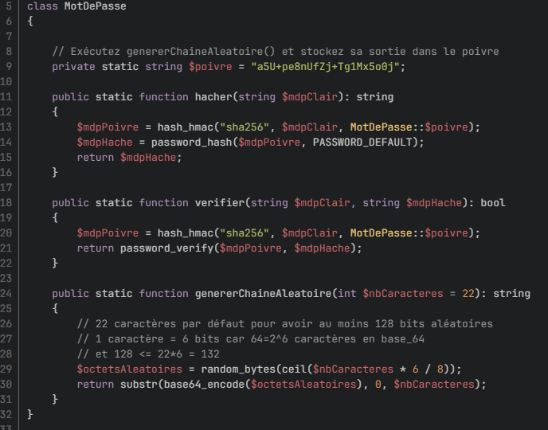

Compétence 2 : Optimiser des applications
AC 2 Utiliser des techniques algorithmiques adaptées pour des problèmes complexes (par ex. recherche opérationnelle, méthodes arborescentes, optimisation globale, intelligence artificielle…)
CE 2 En recensant les algorithmes et les structures de données usuels
CE 4 En justifiant les choix et validant les résultats
Niveau estimé : Maitrise
Ex : Le SAE avec notre jeu La roue de la Fortune où nous avons dû analyser avec méthodes les besoins algorithmiques pour structurer notre code.
De plus lors des TD de 3.02 Dev Efficace, j'ai pu expirimenter tous les alogorithmes de structures de données comme les arbres ou les chaînes. J'ai pû y apprendre différents types d'algorithmes comme diviser pour mieux régner.
AC 2 Utiliser des techniques algorithmiques adaptées pour des problèmes complexes
CE 1 En formalisant et modélisant des situations complexes
Lors des TD de 3.02 Dev Efficace, j'ai pu apprendre une nouvelle façon de penser en terme de programmation. J'ai découvert la récurssivité et les algorithmes diviser pour mieux régner. JCes derniers permettent de résoudre des problèmes complexes auparavant impossible pour moi à résoudre. Notament le parcours d'un arbre binaire ou même la recherche d'un chemin dans un graphe.
Lors des cours R4.04 Méthodes d'optimisation, nous avons utilisé des algorithmes complexe pour résoudre des problèmes encore plus complexe. Il y a par exemple l'algorithme de Kruskal ou même de Prim-Jarnick

AC 3 Comprendre les enjeux et moyens de sécurisation des données et du code
Lors de plusieurs TD de management au semestre 3, nous avons appris à sécuriser les données et le code. Nous avons l'importance de sécuriser les données. Nous avons vu cela principalement avec le serious game Hellink avec Elixène Seyrig, experte en cybercriminalité. J'ai pu y apprendre beaucoup de chose en terme de cybersécurité et enjeux des données personelles.
Lors des td de R3.01 Développement web et Javascript, j'ai pu apprendre à sécuriser les donner avec le hashage, salage et poivrage des mots de passe utilisateur ou encore en empéchant les injections hmtl / sql sur la base de données pour ne pas dévoiler de données sensibles. Voici par exemple ma fonction de hashage du mot de passe pour le projet E-commerce du semestre 3.

AC 4 Évaluer l'impact environnemental et sociétal des solutions proposées
Lors des différents cours de Management avancée, nous avons appris à évaluer l'impact environnemental et sociétal des solutions proposées. Nous avons appris à prendre en compte les enjeux environnementaux et sociétaux dans la conception de nos projets.